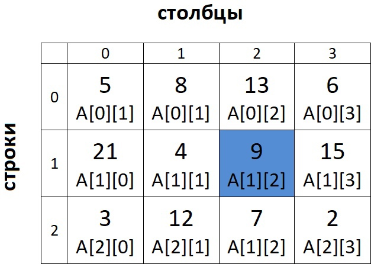

Двумерные массивы
Двумерный массив можно представить в виде таблицы или матрицы. У каждого элемента двумерного массива два индекса:
номер строки и номер столбца. Массив из 3 строк и 4 столбцов типа int в программе объявляется так:
int A[3][4];
Давайте посмотрим на такой двумерный массив заполненный случайными числами:
двумерный массив A
Элемент A[1][2] = 9.
Так как у элемента уже два индекса, то работа с таким массивом обычно выполняется в двух вложенных циклах. Первый цикл будет отвечать за смену строки, а второй за смену столбца. Нумерация, как и у обычного массива, начинается с 0!
Ввод двумерного массива, у которого n строк и m столбцов выглядит так:
for (i = 0; i < n; i++) { // цикл по строкам for (j = 0; j < m; j++) { // цикл по столбцам scanf("%i", &A[i][j]); } }
Выводить такой массив можно и просто в строчку, как одномерный массив. Если вы хотите вывести матрицу, то вам надо на каждом переходе к следующей строке выводить символ перевода строки '\n'. Вывод таким способом:
for (i = 0; i < n; i++) { for (j = 0; j < m; j++) { printf("%i ", A[i][j]); } printf("\n"); }
Задача: вводится двумерный массив с n (2 ≤ n ≤ 10) строками и m (2 ≤ m ≤ 10) столбцами, необходимо к каждому элементу прибавить 10 и вывести результат.
1
2
3
4
5
6
7
8
9
10
11
12
13
14
15
16
17
18
19
20
21
22
23
24
#define _CRT_SECURE_NO_WARNINGS #include<stdio.h> #include<stdlib.h> int main() { int A[10][10], i, j, n, m; scanf("%i%i", &n, &m); for (i = 0; i < n; i++) { // ввод for (j = 0; j < m; j++) { scanf("%i", &A[i][j]); } } for (i = 0; i < n; i++) { // действия for (j = 0; j < m; j++) { A[i][j] += 10; } } for (i = 0; i < n; i++) { // вывод for (j = 0; j < m; j++) { printf("%i ", A[i][j]); } printf("\n"); } return 0; }
Чтобы закрепить материал, можете прорешать задачи по двумерным массивам.
Code.C
© Copyright Павел Калашников 2021
обратная связь code.c04@mail.ru